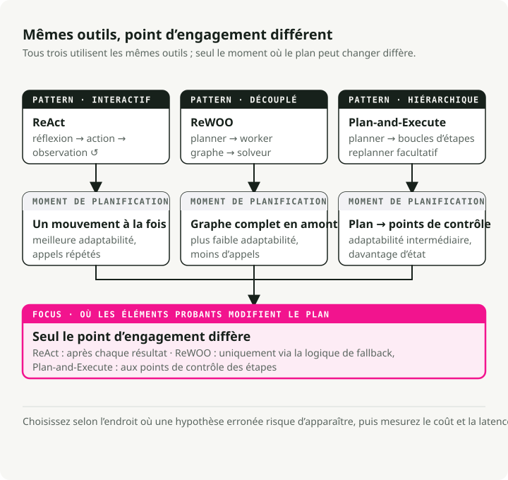
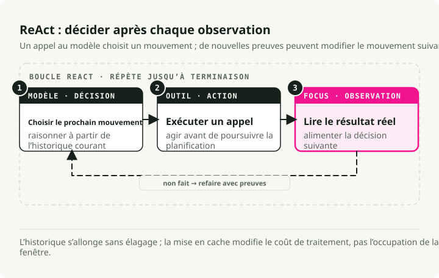
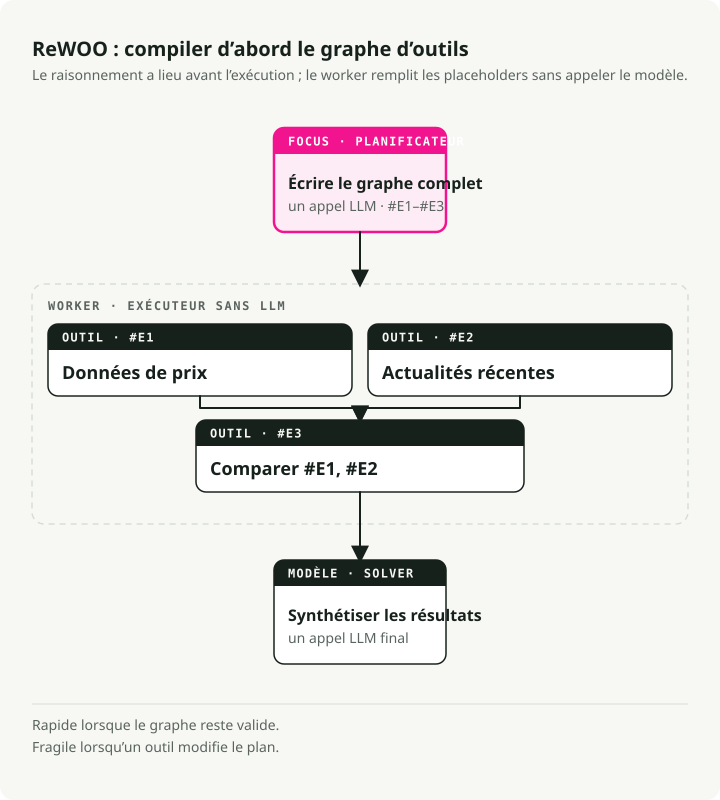
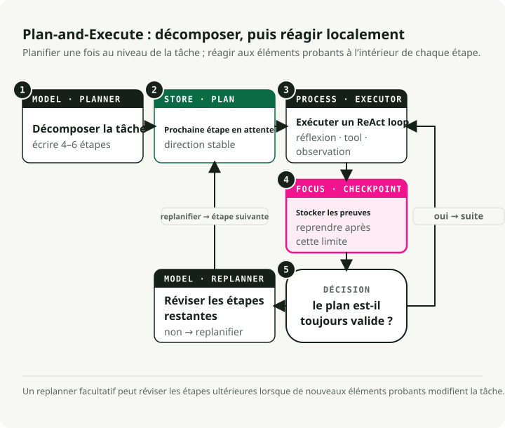
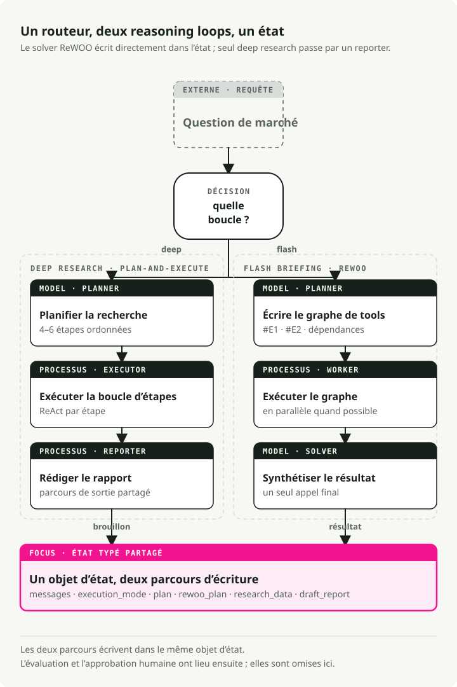

Traduction automatique
Cet article a été traduit automatiquement depuis la version originale en anglais.
Boucles de raisonnement des agents IA en 2026 : ReAct vs ReWOO vs Plan-and-Execute
Partie 1 de la série Engineering the Agentic Stack
Construire des agents IA utiles relève désormais surtout de l’architecture système, plus du prompt engineering. La décision la plus importante est la boucle de raisonnement de l’agent : comment le système planifie, appelle des outils, observe les résultats et décide quand s’arrêter.
Cet article compare les trois patterns de boucle d’agent IA à connaître en 2026 : ReAct, ReWOO et Plan-and-Execute. L’exemple fil rouge est un agent d’analyse de marché que j’ai construit avec LangGraph, avec le code complet sur GitHub.
En bref : ReAct est flexible mais coûteux, ReWOO est rapide quand le workflow est prévisible, et Plan-and-Execute est adapté aux analyses multi-étapes. Un agent IA de production peut router entre plusieurs boucles de raisonnement selon la requête, en s’appuyant sur un état partagé et des nœuds LangGraph checkpointés pour donner à chaque tâche la boucle adaptée à sa forme.
Pourquoi les boucles de raisonnement des agents IA comptent
Il y a un an, rendre un LLM utile relevait surtout de la formulation du prompt. Aujourd’hui, il s’agit surtout de conception de graphe : comment le raisonnement, l’usage des outils et la mémoire sont câblés ensemble.
La boucle de raisonnement se situe au milieu de ce graphe. C’est elle qui décide quand le modèle réfléchit, quand il appelle un outil et quand il s’arrête. Si vous choisissez la mauvaise, vous dépensez des tokens supplémentaires sur des appels inutiles, vous ajoutez des secondes de latence à chaque tour, ou votre agent casse dès qu’un outil renvoie quelque chose qu’il n’attendait pas.
Trois patterns de raisonnement d’agent IA

ReAct : réfléchir, agir, observer, répéter
ReAct (Yao et al., 2022) est le pattern d’origine pour les agents interactifs. Il exécute une boucle :
- Thought : l’agent génère une "pensée" pour décomposer l’objectif et planifier l’étape suivante.
- Action : à partir de cette pensée, il appelle un outil.
- Observation : l’agent lit le résultat, qui met à jour sa compréhension pour la pensée suivante.

Avantages :
- L’ancrage dans des observations réelles réduit les faits inventés.
- L’agent peut changer de stratégie à la volée selon ce qu’il vient d’observer.
- Le "scratchpad" fournit une trace d’audit du raisonnement.
Inconvénients :
- L’historique s’accumule et est retraité à chaque étape, donc la latence et le coût augmentent avec la longueur de la boucle.
- C’est inefficace quand les appels d’outils auraient pu être planifiés dès le départ, ce qui est précisément le cas d’usage de ReWOO.
- Sans condition d’arrêt ni limite d’étapes, la boucle tourne indéfiniment.
Idéal pour : tâches exploratoires, débogage, situations où l’on ne peut pas prédire ce qui vient ensuite.
ReWOO : tout planifier à l’avance
ReWOO (Reasoning WithOut Observation) est un cousin plus efficace de ReAct. L’idée clé est de découpler le raisonnement de l’exécution des outils : au lieu de s’arrêter pour observer après chaque action, ReWOO planifie en une seule passe toute la séquence d’appels d’outils.
- Plan : un appel LLM écrit le plan complet des appels d’outils, avec des placeholders de variables (
#E1,#E2) pour des sorties qui n’existent pas encore. - Worker : un exécuteur non-LLM lance les outils planifiés en séquence ou en parallèle, en remplissant les placeholders.
- Solver : un appel final au LLM prend les observations collectées et rédige la réponse.

Avantages :
- Environ 5x plus efficace en tokens que ReAct, car on évite l’historique répété Thought-Action-Observation.
- Latence plus faible. Pas de renvoi de l’historique à chaque étape.
- Le planner peut être fine-tuné séparément, sans environnement live.
Inconvénients :
- Fragile quand les outils se comportent mal. Le plan suppose que tout fonctionne.
- Nécessite des workflows prévisibles.
- Sans logique de repli explicite, un plan défectueux continue son exécution.
Idéal pour : briefings rapides, vérifications de statut, dashboards. Tout ce où les outils se comportent de manière prévisible.
Plan-and-Execute : un hybride
Plan-and-Execute se situe entre les deux. L’article propose une séparation simple que la plupart des agents modernes ont adoptée :
- Phase de planification : l’agent génère d’abord un plan qui découpe la tâche en sous-tâches plus petites.
- Phase d’exécution : l’agent exécute ensuite ces sous-tâches.
L’article d’origine se concentrait sur le zero-shot prompting. Des frameworks modernes comme LangGraph l’ont fait évoluer en un pattern d’orchestration complet, avec exécution séquentielle et choix de modèle par étape (un modèle de raisonnement puissant pour la planification, un modèle moins cher pour l’exécution).

Avantages :
- Un raisonnement hiérarchique qui reflète la manière dont un expert humain décompose un projet.
- La replanification est possible. Vous pouvez mettre en pause et réévaluer si le résultat d’une étape est inattendu.
- Spécialisation des modèles. Le planner peut être coûteux, l’exécuteur peut être économique.
- Complexité bornée, avec un checkpoint clair après chaque étape.
Inconvénients :
- Latence plus élevée que ReWOO car les étapes s’exécutent séquentiellement.
- Davantage d’état à gérer.
- Excessif pour des requêtes one-shot.
Idéal pour : analyse complexe multi-étapes, tâches de recherche, tout ce qui demande une synthèse finale.
Comment choisir une boucle de raisonnement d’agent IA
| Feature | ReAct (2022) | Plan-and-Execute (2023) | ReWOO (2023) |
|---|---|---|---|
| Core philosophy | Improvisateur : agir, puis décider de la suite selon le résultat. | Architecte : construire un plan complet, l’exécuter, puis le revoir. | Optimiseur : écrire un "script" avec variables et tout exécuter d’un coup. |
| Workflow | Boucle itérative : Thought → Action → Observation. | Deux étapes : Phase 1 (Planning), Phase 2 (Execution). | Découplé : le Planner crée un graphe d’appels d’outils ; le Worker les exécute. |
| Adaptability | La plus élevée : peut changer de direction après chaque appel d’outil. | Moyenne : replanifie en général seulement après un ensemble d’étapes. | La plus faible : suit généralement le script initial sauf si le Solver échoue. |
| Efficiency | Faible : forte consommation de tokens ; doit relire tout l’historique à chaque étape. | Moyenne : économise des tokens en évitant de "re-réfléchir" pendant l’exécution. | Élevée : appels LLM minimaux ; peut paralléliser l’exécution des outils pour aller plus vite. |
| Best for | Exploration ouverte ou tâches où les résultats sont imprévisibles. | Tâches de long terme qui exigent un objectif stable (ex. : écrire un article). | Workflows structurés et répétables (ex. : vérifier la météo dans 5 villes). |
1. ReAct : le pattern "penser au fil de l’eau"
À quoi ça ressemble : un humain qui débogue un problème. "Je vais essayer ça... ok, ça n’a pas marché, je vais plutôt tenter ça."
Point fort : gère bien les inconnues imprévues. Si un résultat de recherche révèle un nouveau sujet, l’agent peut bifurquer à l’étape suivante.
Point faible : tendance à boucler sur une action en échec. Le pattern le plus coûteux en tokens.
2. Plan-and-Execute : le pattern orienté mission
À quoi ça ressemble : un chef de projet. "Voici le plan en 5 étapes. Faisons les étapes 1 à 5, puis vérifions si c’est terminé."
Point fort : garde l’agent focalisé sur l’objectif de haut niveau. Meilleurs taux de réussite sur les tâches longues et complexes.
Point faible : si l’étape 1 échoue d’une façon qui casse les étapes 2 à 5, l’agent peut dérouler le plan défectueux avant de s’en rendre compte.
3. ReWOO : le pattern compilateur
À quoi ça ressemble : écrire un petit programme. "J’ai besoin de données de Tool A et Tool B, puis je les combinerai dans Tool C."
Point fort : beaucoup plus rapide et moins cher. Le plan est compilé une fois avec des placeholders (#E1 pour la sortie du premier outil), puis exécuté sans autre appel LLM jusqu’à la synthèse finale.
Point faible : aveugle pendant l’exécution. Si le premier outil dit "Je ne trouve pas cette personne", l’agent exécutera quand même les étapes suivantes qui dépendaient de l’existence de cette personne.
Quel choix faire
- ReAct si l’agent dialogue avec un utilisateur et doit réagir en temps réel.
- Plan-and-Execute si vous automatisez un travail long en plusieurs étapes, comme un rapport de recherche.
- ReWOO si vous avez un pipeline prévisible et voulez réduire votre facture API d’environ 80 %.
Exemple détaillé : le Market Analyst Agent
Pour rendre cela concret, j’ai construit un Market Analyst Agent qui utilise les trois patterns dans une même base de code, sur une tâche d’étude de marché.
Il utilise LangGraph pour l’orchestration. Les trois patterns partagent le même objet d’état, donc le routeur peut choisir lequel exécuter selon la requête :

Définition de l’état
L’état partagé capture tout ce dont l’agent a besoin entre les différents modes :
class PlanStep(BaseModel):
"""A single step in the research plan."""
step_number: int
description: str
tool_hint: str | None = None
completed: bool = False
result: str | None = None
class UserProfile(BaseModel):
"""Structured user context loaded from long-term memory."""
risk_tolerance: str | None = None
investment_horizon: str | None = None
class AgentState(BaseModel):
"""Main state for the Market Analyst Agent graph."""
# Identity and profile context for memory-backed personalization
user_id: str
user_profile: UserProfile = Field(default_factory=UserProfile)
# Message history with LangGraph's add_messages reducer
messages: Annotated[list, add_messages] = Field(default_factory=list)
# Execution mode (set by router)
execution_mode: ExecutionMode | None = None
# Plan-and-Execute state
plan: list[PlanStep] = Field(default_factory=list)
current_step_index: int = 0
# ReWOO state
rewoo_plan: list[ReWOOPlanStep] = Field(default_factory=list)
# Research results
research_data: ResearchData | None = None
# HITL output
draft_report: DraftReport | None = None
report_approved: bool = False
Pattern 1 : implémentation Plan-and-Execute
Plan-and-Execute est le bon choix pour les tâches qui demandent une synthèse en plusieurs étapes. L’astuce consiste à séparer clairement la planification et l’exécution : un modèle puissant pour le plan initial, puis une boucle ReAct pour exécuter chaque étape avec la possibilité de réagir aux résultats des outils.
Correspondance avec le pattern :
- Une phase de planification initiale unique. Un seul appel LLM produit le plan complet sous forme de liste d’étapes.
- Sortie structurée via Schema-Guided Reasoning, qui garantit un JSON valide.
- Pas encore d’exécution d’outil. Le planner décide seulement quoi faire, pas comment.
- Étapes lisibles par un humain. Chaque étape est du texte qu’un exécuteur interprétera.
# System prompt guides the LLM to think like a research analyst
# creating a strategic plan, not immediate tool calls
PLANNER_SYSTEM_PROMPT = """You are a senior investment research analyst.
Break down stock analysis requests into 4-6 research steps covering:
1. Current price and basic metrics
2. Recent news and announcements
3. Competitor analysis (if relevant)
4. Financial health assessment
5. Risk factors
6. Investment thesis synthesis
Output as JSON with step_number, description, and tool_hint."""
# Schema-Guided Reasoning: Enforce structure with Pydantic
class PlanOutput(BaseModel):
"""Structured output for the planner."""
steps: list[PlanStep] = Field(description="Research steps to execute")
ticker: str = Field(description="The stock ticker being analyzed")
def planner_node(state: AgentState) -> dict:
"""Generate a research plan from the user's request.
This is Phase 1 of Plan-and-Execute: creating the high-level strategy.
"""
# Use a powerful model for strategic planning
llm = ChatAnthropic(model="claude-sonnet-4-5-20250929", temperature=0)
# Apply Schema-Guided Reasoning to guarantee valid plan structure
# This prevents common formatting errors that would break execution
structured_llm = llm.with_structured_output(PlanOutput)
# Context from long-term memory personalizes the plan
profile_context = f"""
User Profile:
- Risk Tolerance: {state.user_profile.risk_tolerance}
- Investment Horizon: {state.user_profile.investment_horizon}
"""
# Single LLM call creates the complete plan
result: PlanOutput = structured_llm.invoke([
SystemMessage(content=PLANNER_SYSTEM_PROMPT + profile_context),
HumanMessage(content=f"Create a research plan for: {last_user_message}"),
])
# State update: Store the plan and initialize tracking
return {
"plan": result.steps, # The sequential steps to execute
"current_step_index": 0, # Start at step 0
"research_data": ResearchData(ticker=result.ticker), # Initialize data container
}
Cette ligne llm.with_structured_output(PlanOutput) correspond à la Schema-Guided Reasoning (SGR), que j’ai couverte dans un article précédent. Forcer le schéma PlanOutput signifie que le planner renvoie toujours une liste d’étapes valide. LangGraph utilise ensuite ces sorties structurées pour piloter un flux de contrôle déterministe via des arêtes conditionnelles.
Pattern 2 : exécution ReAct
Une fois le plan établi, l’exécuteur lance chaque étape comme sa propre boucle ReAct. C’est la phase 2 : chaque étape est suffisamment petite pour qu’un cycle Thought-Action-Observation reste ciblé, et l’agent peut réagir à ce que l’outil renvoie.
Correspondance avec la partie ReAct :
- Exécution itérative. Une étape à la fois, avec retour d’observation.
- La boucle Thought-Action-Observation s’exécute dans
create_react_agent. - Les résultats des étapes précédentes sont injectés comme contexte pour le raisonnement courant.
- L’agent choisit les outils selon la description de l’étape.
- Il peut changer d’approche en cours d’étape selon ce que renvoie un outil.
# Tools available for the ReAct agent to choose from
TOOLS = [
get_stock_snapshot,
get_price_history,
search_news,
search_competitors,
get_financials,
]
def executor_node(state: AgentState) -> dict:
"""Execute the current step using a ReAct agent.
This is Phase 2 of Plan-and-Execute: adaptive execution of each planned step.
Each step runs as a mini ReAct loop until completion.
"""
# Get the current step from the plan
current_step = state.plan[state.current_step_index]
# Build context from what we've learned so far
# This matters: each step builds on previous observations
previous_context = ""
for step in state.plan[:state.current_step_index]:
if step.result:
previous_context += f"\nStep {step.step_number}: {step.result}\n"
# Create a ReAct agent for this step
# LangGraph's create_react_agent implements the full Thought-Action-Observation loop:
# 1. Agent generates a "thought" about what tool to call
# 2. Agent calls the tool ("action")
# 3. Tool returns result ("observation")
# 4. Agent decides: call another tool or finish
react_agent = create_react_agent(
model=ChatAnthropic(model="claude-sonnet-4-5-20250929"),
tools=TOOLS,
)
# Invoke the ReAct loop for this single step
# The agent will loop internally until it completes the step
result = react_agent.invoke({
"messages": [
SystemMessage(content=EXECUTOR_SYSTEM_PROMPT),
HumanMessage(content=f"""Execute Step {current_step.step_number}:
{current_step.description}
Ticker: {state.research_data.ticker}
Previous findings: {previous_context}"""),
]
})
# Extract the final answer from the ReAct agent's message history
# The last message contains the synthesis after all tool calls
updated_plan = list(state.plan)
updated_plan[state.current_step_index] = PlanStep(
step_number=current_step.step_number,
description=current_step.description,
completed=True,
result=result["messages"][-1].content, # Final observation
)
# State update: Mark step complete and advance to next
return {
"plan": updated_plan,
"current_step_index": state.current_step_index + 1,
}
C’est le cœur du flux Plan-and-Execute : un modèle puissant écrit le plan, puis ReAct exécute chaque étape avec une adaptabilité complète.
Pattern 3 : ReWOO pour les snapshots rapides
Pour les briefings rapides, ReWOO saute le raisonnement intercalé et exécute les outils en parallèle. Le planner émet dès le départ un script compilé d’appels d’outils, et le worker l’exécute sans aucune intervention supplémentaire du LLM.
La structure :
- Trois phases (Planner → Worker → Solver), sans boucle.
- Les appels d’outils référencent des placeholders
#E1,#E2pour des résultats qui n’existent pas encore. - Aucun LLM pendant l’exécution. Le worker ne fait qu’exécuter les outils.
- Les outils indépendants s’exécutent en parallèle.
- Un seul appel de synthèse à la fin, sur l’ensemble des données.
Phase 1 : planner ReWOO (crée le graphe d’exécution complet dès le départ)
class ReWOOPlanStep(BaseModel):
"""A step in the ReWOO plan with variable placeholders.
Key difference from Plan-and-Execute's PlanStep:
- Contains actual tool_name and tool_args (not just description)
- Uses variable references (#E1) for dependencies
"""
step_id: str # e.g., "#E1" - becomes a variable
description: str
tool_name: str # Exact tool to call
tool_args: dict # May contain variable refs like {"price": "#E1"}
depends_on: list[str] = [] # For dependency ordering
result: str | None = None
class ReWOOPlanOutput(BaseModel):
"""Structured output for ReWOO planner."""
steps: list[ReWOOPlanStep] = Field(description="Planned tool calls with variables")
def rewoo_planner_node(state: AgentState) -> dict:
"""Generate a complete plan of tool calls upfront.
This is the key difference from Plan-and-Execute: instead of creating
human-readable step descriptions, we create EXACT tool calls that
the worker will execute blindly.
"""
llm = ChatAnthropic(model="claude-sonnet-4-5-20250929", temperature=0)
# Schema-Guided Reasoning ensures valid tool call specifications
structured_llm = llm.with_structured_output(ReWOOPlanOutput)
ticker = state.research_data.ticker if state.research_data else "UNKNOWN"
# Single LLM call to plan ALL tool executions
result: ReWOOPlanOutput = structured_llm.invoke([
SystemMessage(content=REWOO_PLANNER_PROMPT),
HumanMessage(content=f"""Create a ReWOO plan for: {query}
Ticker: {ticker}
Output tool calls with:
- step_id: Variable name (#E1, #E2, etc.)
- description: What this accomplishes
- tool_name: Exact tool from the list
- tool_args: Dictionary of arguments
- depends_on: List of step_ids this depends on"""),
])
# State update: Store the complete execution plan
# Worker will execute this without any LLM involvement
return {"rewoo_plan": result.steps}
Phase 2 : worker ReWOO (exécute les outils sans raisonnement LLM)
def rewoo_worker_node(state: AgentState) -> dict:
"""Execute all planned tools in parallel (no LLM calls).
This is the key efficiency: Worker is "dumb" - it just runs tools
according to the plan. No LLM calls = massive token savings.
"""
results = {} # Store results keyed by step_id (e.g., "#E1": "$150.23")
# Execute ALL independent steps in parallel using ThreadPoolExecutor
# This is where ReWOO gets its speed advantage
with ThreadPoolExecutor(max_workers=5) as executor:
futures = {
executor.submit(execute_tool, step): step
for step in state.rewoo_plan
if not step.depends_on # Only independent tools for parallel batch
}
# Collect results as they complete
for future in as_completed(futures):
step = futures[future]
results[step.step_id] = future.result()
# No LLM reasoning here - just store the raw tool output
# State update: Store results for the Solver phase
return {"rewoo_plan": updated_steps}
Phase 3 : solver ReWOO (synthétise tous les résultats en un seul appel LLM)
def rewoo_solver_node(state: AgentState) -> dict:
"""Synthesize all tool results into a flash briefing.
This is the second efficiency gain: Instead of interleaving
LLM calls with tool execution (like ReAct), we make ONE
final synthesis call with all gathered data.
"""
# Build context from ALL tool results at once
tool_results = []
for step in state.rewoo_plan:
if step.result:
tool_results.append(f"### {step.description}\n{step.result}")
context = "\n\n".join(tool_results)
# Single LLM call to synthesize everything
structured_llm = llm.with_structured_output(FlashBriefingOutput)
result = structured_llm.invoke([
SystemMessage(content=REWOO_SOLVER_PROMPT),
HumanMessage(content=f"Create a flash briefing from this data:\n\n{context}"),
])
return {"draft_report": result}
La différence clé : ReWOO planifie tous les appels d’outils dès le départ avec des placeholders (#E1, #E2), les exécute en parallèle sans appels LLM intermédiaires, puis synthétise les résultats en un seul appel final. C’est ce qui le rend économique pour les workflows prévisibles.
Comprendre le code : ce qui différencie chaque pattern
Les trois patterns diffèrent par le moment et la manière dont ils appellent le LLM :
| Pattern | LLM calls during execution | State updates | Key code pattern |
|---|---|---|---|
| Plan-and-Execute | 1 pour la planification + 1 par étape | Achèvement séquentiel des étapes | planner_node() → loop: executor_node() → reporter_node() |
| ReAct (within each step) | Plusieurs par étape (cycles thought-action) | Historique de messages accumulé | create_react_agent() loops internally until step complete |
| ReWOO | 1 pour la planification + 0 pendant l’exécution + 1 pour la synthèse | Achèvement parallèle des outils | rewoo_planner_node() → rewoo_worker_node() → rewoo_solver_node() |
Ce qui change entre eux, c’est ce que le planner produit. C’est cela qui détermine tout le reste.
-
Plan-and-Execute crée des descriptions d’étapes lisibles par un humain :
# Planner output (list of PlanStep objects) plan = [ PlanStep( step_number=1, description="Get current price and key financial metrics", tool_hint="get_stock_price" ), PlanStep( step_number=2, description="Search for recent news and earnings", tool_hint="search_news" ), # ... more steps ]L’exécuteur lit chaque description et décide quels outils appeler. Flexible, mais cela coûte un appel LLM par étape.
-
ReAct n’a pas de plan initial. Il utilise un raisonnement itératif :
# No planning phase - ReAct works step-by-step with accumulated messages messages = [ HumanMessage(content="Execute Step 1: Get current price"), AIMessage(content="I'll call get_stock_price"), ToolMessage(tool_call_id="1", content="$132.45"), AIMessage(content="Now I need metrics..."), # ... agent continues until step complete ]Plusieurs appels LLM par étape, avec adaptation selon les observations. Le plus flexible, le plus coûteux.
-
ReWOO crée des spécifications explicites et exécutables d’appels d’outils :
# Planner output (list of ReWOOPlanStep objects) rewoo_plan = [ ReWOOPlanStep( step_id="#E1", tool_name="get_stock_price", tool_args={"ticker": "NVDA"} ), ReWOOPlanStep( step_id="#E2", tool_name="search_news", tool_args={"query": "NVDA earnings", "limit": 5} ), # ... all tool calls planned upfront ]Le worker exécute à l’aveugle, sans intervention du LLM. Tout le raisonnement se trouve dans le planner et le solver. Le moins cher des trois.
Flux de mémoire et d’état :
- Plan-and-Execute : l’état passe par
plan→current_step_index→research_data. - ReAct : l’état s’accumule dans le tableau
messages(l’historique complet de la conversation). - ReWOO : l’état passe par
rewoo_plan, avec des champsresultremplis par le worker.
Tout assembler : câbler le graphe
Voici comment les trois patterns coexistent dans un seul système LangGraph. Ils partagent un seul AgentState et vivent dans un seul graphe. Un routeur choisit le chemin par requête, donc il s’agit d’un agent avec trois modes d’exécution, pas de trois agents empilés sous un trench coat.
LangGraph garde le câblage déclaratif :
def create_graph(checkpointer=None):
builder = StateGraph(AgentState)
# Add nodes
builder.add_node("router", router_node)
builder.add_node("planner", planner_node)
builder.add_node("executor", executor_node)
builder.add_node("reporter", reporter_node)
builder.add_node("rewoo_planner", rewoo_planner_node)
builder.add_node("rewoo_worker", rewoo_worker_node)
builder.add_node("rewoo_solver", rewoo_solver_node)
# Define edges
builder.add_edge(START, "router")
builder.add_conditional_edges("router", route_after_router, {
"planner": "planner",
"rewoo_planner": "rewoo_planner",
})
# Deep Research path
builder.add_edge("planner", "executor")
builder.add_conditional_edges("executor", route_after_executor, {
"executor": "executor", # Loop back for more steps
"reporter": "reporter", # Done with plan
})
builder.add_edge("reporter", END)
# Flash Briefing path (ReWOO)
builder.add_edge("rewoo_planner", "rewoo_worker")
builder.add_edge("rewoo_worker", "rewoo_solver")
builder.add_edge("rewoo_solver", END)
return builder.compile(
checkpointer=checkpointer,
interrupt_before=["reporter"], # HITL pause for approval
)
Sélection automatique du pattern avec un routeur
Pour choisir la bonne boucle selon la requête, j’ai ajouté un classifieur routeur. Il utilise Schema-Guided Reasoning pour fiabiliser la classification :
class ExecutionMode(str, Enum):
"""Execution mode for the agent."""
DEEP_RESEARCH = "deep_research" # Plan-and-Execute + ReAct (thorough)
FLASH_BRIEFING = "flash_briefing" # ReWOO (fast, token-efficient)
class RouterOutput(BaseModel):
"""Structured output for the router."""
mode: ExecutionMode # DEEP_RESEARCH or FLASH_BRIEFING
ticker: str
reasoning: str
ROUTER_SYSTEM_PROMPT = """Classify the user's request:
1. **deep_research**: Complex analysis requiring synthesis
- Examples: "Analyze strategic risks", "investment thesis"
2. **flash_briefing**: Quick snapshots, simple data retrieval
- Examples: "quick snapshot", "current price"
Default to deep_research if unclear."""
structured_llm = llm.with_structured_output(RouterOutput)
Avec cela en place, les utilisateurs ne choisissent pas de mode. Le routeur envoie "current price" vers ReWOO et "investment thesis" vers Plan-and-Execute de lui-même.
Points clés à retenir
- ReAct reste le choix par défaut pour la flexibilité, au prix de tokens et de latence.
- ReWOO l’emporte sur la vitesse et le coût quand les outils sont fiables et les résultats prévisibles.
- Plan-and-Execute est le bon choix pour les analyses complexes qui nécessitent une synthèse finale.
- Un routeur peut choisir entre eux selon la requête, sans que les utilisateurs aient à le faire.
- La gestion d’état est essentielle. Le checkpointing de LangGraph est ce qui rend possibles les interruptions et la reprise.
L’implémentation complète, y compris le routeur et l’état partagé, est disponible dans le dépôt Market Analyst Agent.
Et ensuite
La partie 2, Architecture mémoire des agents IA en 2026, porte sur le contexte court terme avec checkpointing PostgreSQL et la connaissance long terme dans un stockage vectoriel Qdrant. C’est ce qui rend possibles les workflows pause/reprise et l’apprentissage inter-session.
Références
- ReAct: Synergizing Reasoning and Acting in Language Models (Yao et al., 2022)
- ReWOO: Decoupling Reasoning from Observations for Efficient Augmented Language Models (Xu et al., 2023)
- Plan-and-Solve Prompting: Improving Zero-Shot Chain-of-Thought Reasoning by Large Language Models (Wang et al., 2023)
- Dépôt Market Analyst Agent
Le code du Market Analyst Agent est sur GitHub si vous voulez suivre en lisant.
Série : Engineering the Agentic Stack
- Partie 1 : Boucles de raisonnement des agents IA en 2026 (cet article)
- Partie 2 : Architecture mémoire des agents IA en 2026 — checkpoints, vector stores et mémoire documentaire
- Partie 3 : Utilisation des outils par les agents IA en 2026 — MCP, CLI, Skills, exécution de code et ACI
- Partie 4 : Sécurité des agents IA en 2026 — guardrails, permissions, sandboxes, HITL et scoping MCP
- Partie 5 : Runtime des agents IA longue durée en 2026 — sessions, sandboxes, checkpoints, harnesses et formes de déploiement